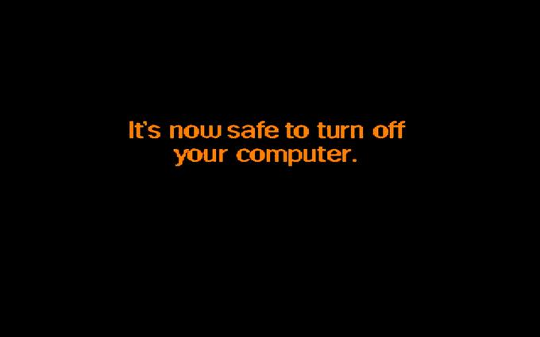

I have always found the Windows 95 shutdown screen extremely attractive. The font and the text have very little to do with it. It's all about the colors.
This is what it looks like:
If you're viewing this page in a browser, you will note that it was so much of an inspiration to me that the site uses almost exactly the same colors. A black (#000000) background and orange (#F88E21) text.
I never really thought about why this shutdown screen existed in the first place. As a kid, I simply took it as a gift from Microsoft. It was a clear demonstration of